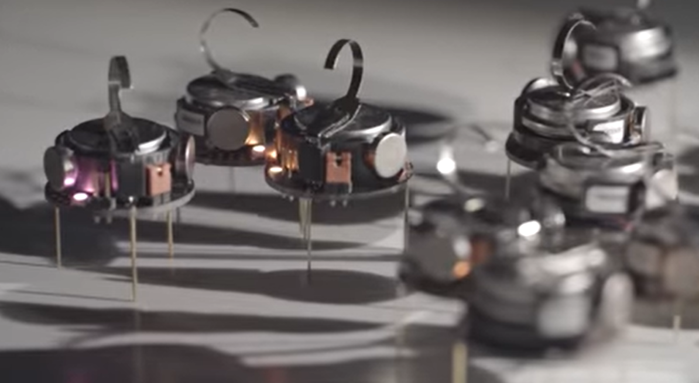
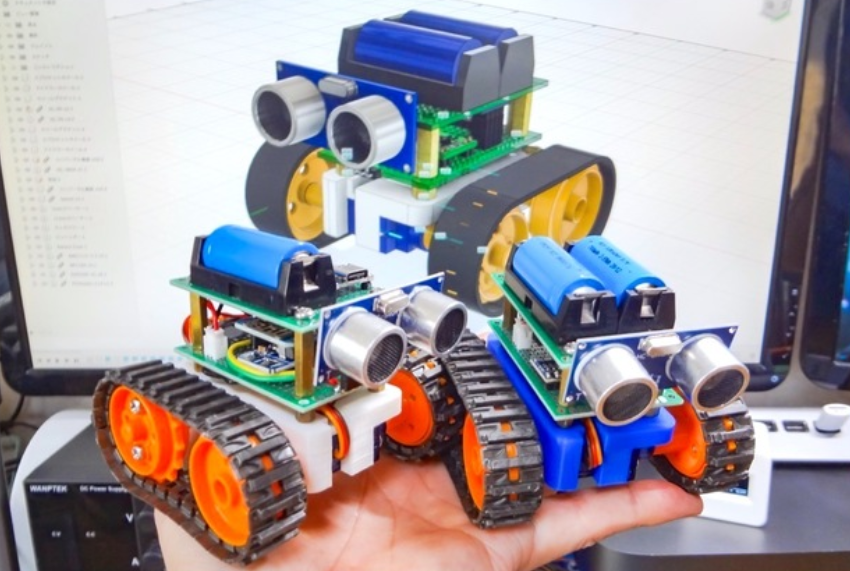

project overview
Swarm robotics refers to the application of numerous, autonomous robots to a purpose. A large number of relatively simple robots are coordinated in a decentralized environment by robot swarms. Swarm robotics is crucial for the development of group artificial intelligence (AI).
We will use multiple swarm robots to detect mines buried in a certain area. We want to utilisze robots that can navigate sand and detect the presence of mines. These robots will inspect the entire region and notify another robot to the coordinates where mines were discovered. The other robot will be in charge of compiling a map of every mine's location. To make them capable of walking on sand we will design them with different wheels like shown in the following picture.
Components
1. SG90(360°) ×2
2. TAMIYA Track & Wheel set
3. TP4056 Charging Module
4. MT3608 Boost Module
5. HC-SR04
6. 16340Lithium ion Battery(or CR123A)
7. Slide Switch
8. Universal Board
9. M3 Screw & Spacer
Current phase
Now we are still designing the robot itself. We will use wood to make the exoskeleton of the robot and make an internal room for the components to fit perfectly. That's it for now ^_^